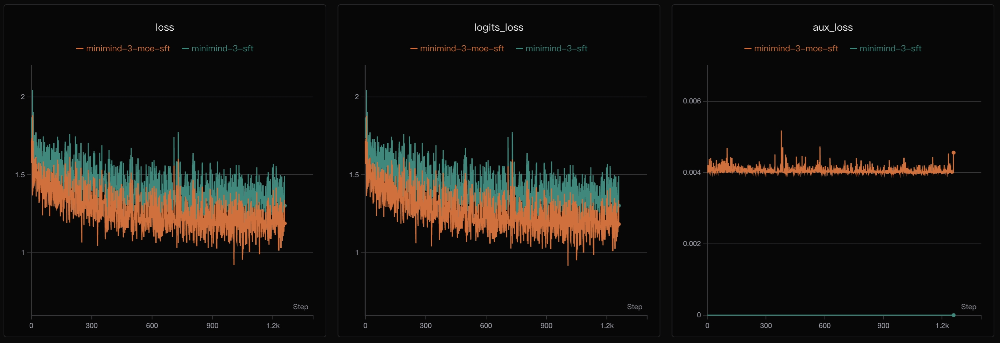

第 10 章 · 训练
指令微调 SFT
预训练后的模型会“接话”，但不会“听话”。SFT 用大量「提问—回答」样本教它遵守指令格式。关键技巧只有一句话：损失只算回答部分，问题部分不计分。
1. 为什么要有 loss mask
如果把用户的问题也拿来算损失，模型会去“学习生成用户的问题”，这是浪费甚至有害的。
正确做法：把问题部分的标签设成 -100，交叉熵会自动忽略它们。
labels = [-100, -100, ..., 回答的 token id, ...]
loss = F.cross_entropy(logits, labels, ignore_index=-100)2. 动画：一条样本的 loss mask 长什么样
下面把一条「system + user + assistant」样本套进模板，逐段走过。 绿色 = 计入损失（assistant 的回答）， 灰色 = 掩码（不计损失）。
动画Chat Template + Loss Mask
🔑 MiniMind 的实现技巧
它先分词出 bos_id = tokenizer("<|im_start|>assistant\n")，
然后扫描序列，找到每个 bos_id 的位置，从它之后开始把标签设为原文 id，
直到遇到 eos_id。这就是 generate_labels 的思路。
3. SFT 与预训练的唯一区别
| 预训练 | 指令微调 SFT | |
|---|---|---|
| 数据 | 纯文本 | 多轮对话（role/content） |
| 标签 | 整段都算 loss | 只算 assistant 部分 |
| 特殊 token | BOS/EOS | + <|im_start|> 等结构标记 |
| 目标 | 学会语言 | 学会对话、问答、工具调用 |

✅ 动手提示
Notebook 里先带你练 tokenizer.apply_chat_template、
list.index 式的子序列匹配、[-100]*len 构造掩码，
再留白让你实现 SFTDataset.generate_labels。这是本章最核心的一段代码。